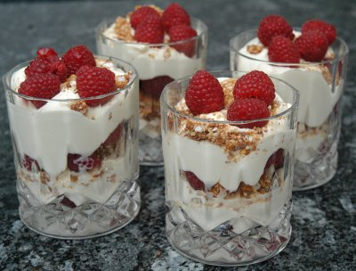

| Zutaten für 4 Portionen | |
| 3 dl | Rahm |
| 4 El | flüssiger Honig |
| 3 El | Whisky |
| 80g | Müsliriegel à (4 Stück) |
| 300g | frische oder tiefgekühlte Himbeeren |
Müsliriegel zerkleinern.
Zubereiten 30 Minuten
Kühlen: 35-40 Minuten
10 Minuten Vorbereitung
30 Minuten kühlen
Rahm mit dem Honig und dem Whisky in eine hohe Schüssel geben und steif schlagen.
Ein Drittel der Himbeeren auf vier Dessertschalen verteilen. ein Drittel des Rahms darauf geben und mit der Hälfte der Müsliriegelkrümeln bestreuen. Wieder Himbeeren und Rahm darauf verteilen. Mit Müsliriegelkrümeln und Himbeeren abschliessen.
Dessertschalen mit Frischhaltefolie abdecken und ca. 30 Minuten in den Kühlschrank stellen.
Als Werbung versandte Rezeptkarten.
475 Kalorien, 20g Fett
Ich fand das ganz toll. Sandra fand es zu süss und die anderen Gäste vergassen darüber einen Kommentar abzugeben ausser, dass es natürlich sehr gut aussieht. Ich befürchtete, dass der Whiskey zu stark durchschlagen würde. Hat er aber nicht. Was mir wichtig scheint, ist das kalt zu servieren. Mit 30 Minuten im Kühlschrank kommt man da nirgends hin. Also ruhig vorher zubereiten und kühlen lassen. Bei Kälte merken die Geschmacksnerven die Süsse nicht so. RE, 23.8.2008
Am 18.2.2011 meinte Sandra Ihr schmecke das definitiv nicht. Der torfige Whisky gab schon seine Note dazu. Ich finde es immer noch sehr schmackhaft. RE.
@LINKBACK_TAG@ @WAKELOCK@